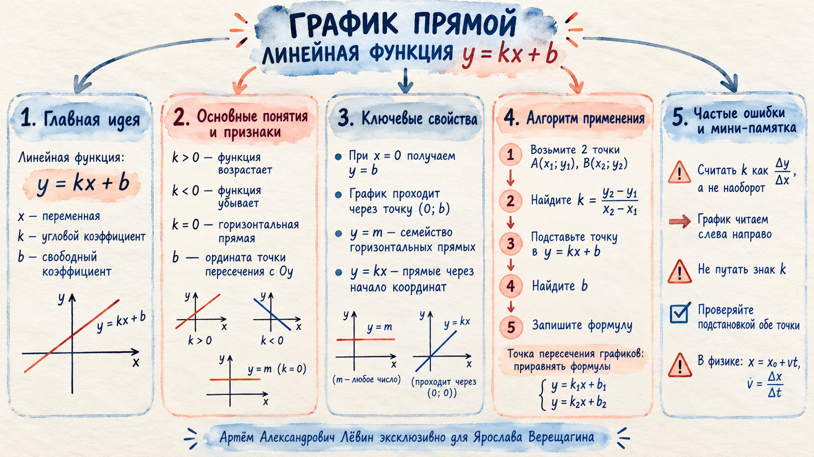

Проверить ответ
Функция убывает; точка пересечения с Oy — (0; 4).
Интерактивное пособие · 21 сентября 2026
Линейная функция связывает формулу и рисунок: коэффициент k задаёт направление и наклон, а b показывает, где прямая пересекает ось Oy.

Линейная функция задаётся формулой:
При x = 0 получаем y = b, поэтому значение b можно считывать непосредственно по пересечению прямой с вертикальной осью.
Проверить влияние k на модели · Проверить влияние b на модели
Если известны две точки A(x₁; y₁) и B(x₂; y₂), угловой коэффициент вычисляется как отношение вертикального изменения к горизонтальному:
Альтернативный точный способ — подставить координаты двух точек в y = kx + b, получить систему из двух уравнений и найти k и b.
Горизонтальные прямые. Изменение m перемещает прямую вверх или вниз.
Все прямые проходят через начало координат. Изменение k меняет направление и наклон.
В занятии рассматривались случаи y = 1, y = 2, y = −3, а также y = x, y = 2x, y = −3x.
Формулы движения имеют ту же структуру, что и линейная функция.
v₀ играет роль b, ускорение a — роль k.
x₀ — начальная координата, v = Δx/Δt — скорость.
Пример занятия: если за 4 секунды координата увеличилась на 2 метра, то скорость равна 0,5 м/с.
В общей точке обе функции имеют одинаковые значения x и y. Поэтому для двух прямых приравниваем правые части:
Функция убывает; точка пересечения с Oy — (0; 4).
k = 1.
k = −1/2, b = 4; y = −1/2 x + 4.
x₀ = −3 м; v = 0,5 м/с.
Точка пересечения: (3; 1).
Отмечено 0 из 5 навыков.